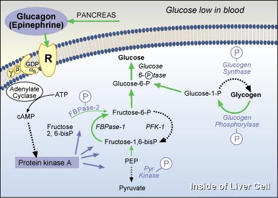

|
Carbohydrate Metabolism Regulation Problem SetQuestion 5: Enzyme Phosphorylation Induced by GlucagonTutorial to help answer the question.The same enzymes that are (de)phosphorylated by insulin action (namely glycogen synthase, glycogen phosphorylase, the PFK-2/FBPase-2 bifunctional enzyme and pyruvate kinase) are phosphorylated via glucagon and/or epinephrine action. Which kinase is responsible for these phosphorylation events?
TutorialGlucagon Acts via cAMP  Even though glucagon is a peptide, not a catecholamine, the glucagon receptor can almost be considered to be an adrenergic receptor, in that it is linked via Gs to adenylate cyclase. The cAMP second messenger that results from this linkage activates a kinase, very imaginatively named "cAMP-dependent protein kinase" or protein kinase A. This enzyme then phosphorylates all of the enzymes that insulin may have previously dephosphorylated. Thus, the concept that insulin and glucagon have opposite actions has a definite biochemical basis! Problem 5 | Answer | Problem
6 The University of Arizona March 16, 2001 Revised: August, 2004 Contact the Development Team http://biology.arizona.edu |